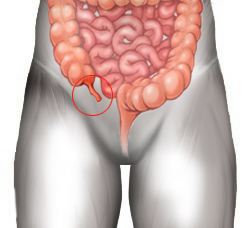

Apendicitis
Par
apéndice

Generalidades:
Es la inflamación de la apéndice que se encuentra en la parte inferior del ciego. Puede deberse a alguna obstrucción o un tumor.
El principal síntoma puede ser un dolor que va de la parte inferior del ombligo hacia abajo, al lado derecho.
De no atenderse oportunamente puede producirse la apendicitis aguda e incluso romperse el órgano ocasionando peritonitis y choque séptico. De ser necesario se procederá de emergencia a extirpar la apéndice mediante cirugía. De no atenderse hay pocas probabilidades de supervivencia.